ECE 5730 Final Project: Air Drums
Ang Chen (ac2839), Devin Singh (ds2392), and Kaiyuan Xu (kx74)
Project Introduction
- Sound Bite: Experience the future of drumming with our innovative air drum kit—no noise, all rhythm.
We've developed an electronic drum kit with an interface consisting of two drumsticks, each equipped with an Inertial Measurement Unit sensor and a toggle button, along with a kick pedal. The traditional drum pads or any striking surface are omitted. When a drumstick downstroke or a press of the pedal is detected, drum sounds purely synthesized by the Raspberry Pi Pico will be played, accompanied by a synchronized visual effect on the VGA screen. The drum kit features three types of sounds—hi-hat, snare, and bass—where the toggle buttons on the drumsticks allow for seamless switching between the hi-hat and the snare sounds. Now you can drum in the air—no more noise from striking the pads, and you can plug in headphones to completely avoid disturbing others. Plus, it looks pretty cool!
High Level Design
1. Overview
Our original plan when brainstorming project ideas was to synthesize various drum sounds and play them through keypad button press. As this idea was too simple, we debated connecting a predefined interface, such as a guitar hero drum kit, to the RP2040 and emulating a real drum playing experience. However, after some research, we discovered that resources involving the operation and wiring of the drum pads were limited. Instead, we decided to develop our own interface, in the form of “Air drum sticks”, in order to emulate a drum-kit playing experience, without the need of physical drum pads. This idea was inspired by a previous Microncontrollers project that can be found here, where an air drum kit was also created. Their “Air Drum” interface was created using IR sensors while ours was made using the MPU6050 Inertial Measurement Unit (IMU). Similar to this group, we produced drum sounds based on the Karplus-Strong algorithm.
2. Background Math:
The equation (i) shows the probabilistic recurrence relation pattern for computing the value (Y_t) of a sample point for the drum sound. First of all, the buffer (which can also be regarded as a wavetable) needs to be initialized. It can be filled either with varying values according to the desired sound to be produced or entirely with a constant, as the following drum algorithm will introduce randomness. For the value at moment t, two values, which are p and p+1 indices ahead respectively, are read from the wavetable and averaged, and the polarity of this result is determined by a random-bit generator.
The parameter b here is called the blend factor. If its value is 1, then Y_t will only be equal to the positive average, producing a plucked string sound; when b is set to around ½, the sound becomes aperiodic and randomized, appearing to be drum-like. The computed value is then updated into the wavetable where it will be indexed in the next cycle.
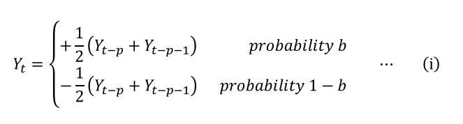
Figure 1 illustrates the process described above. The average acts as a filter that suppresses the high frequency components more than the low frequency components, emulating the vibration of a physical drum head.
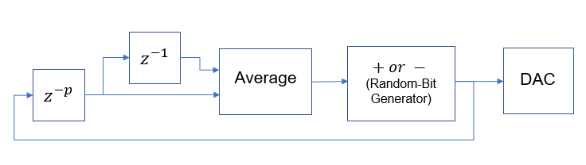
Figure 1: The Drum Algorithm Block Diagram
The parameter p stands for pitch factor, and the value of it also represents the total length of the wavetable. In theory, when the blend factor is set to around ½, as the sound becomes aperiodic, the value of p should be able to control the decay time of the noise burst, and we should be able to generate different drum sounds by changing this value, for example, larger number for a snare and smaller number for toms.
3. Logical Structure
There are three essential elements of our designed, outlined in the following block diagram:
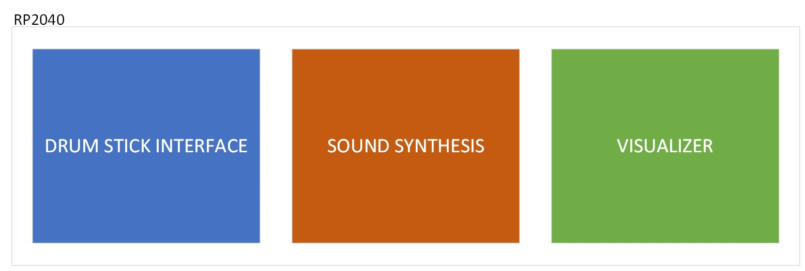
Figure 2: Block diagram visualizing the three essential elements of our project
Figure 2 shows that there are three essential aspects to the functionality of our project. The RP2040 will be responsible for hosting the drum stick interface, producing the sounds that will be heard and outputting visual effects onto the VGA screen to enhance our design.
The methods by which we develop these three elements is shown below:
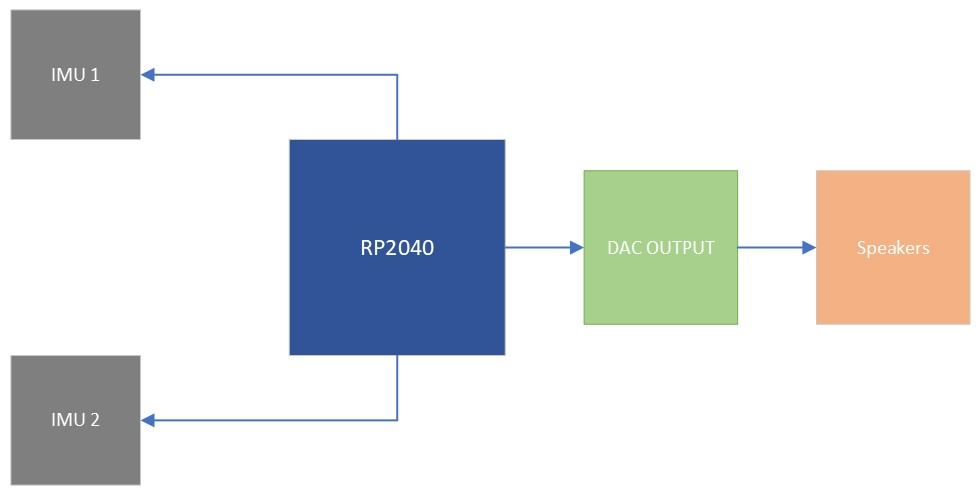
Figure 3: Block diagram visualizing the hardware connections of our project
Stick movement will be tracked via the two MPU6050 IMUs. When a downward stroke is detected, the RP2040 should send the selected synthesized audio signal of a drum sound to the DAC output which will be played through the speakers.
4. Hardware/software trade-offs
a. DAC & Speaker Output:
For sound output a single DAC was used to output all three drum sounds. The DAC was connected to a single audio jack. Both sticks output independently through both channels of the DAC and the DAC outputs A and B were both connected to the audio jack output. The kick drum shared the DAC channel output of the left stick. This was done in order to conserve resources and board space. If we were to add another DAC for the kick drum, we would also need another audio jack, and therefore another set of speakers. The kick drum shares the audio output of the left stick which is often playing the snare drum for right-handed drummers. As typically drum patterns do not usually feature the snare drum and the kick drum playing at the same time, we believe this is a good tradeoff. This will be discussed further in future sections.
b. Two Separate I2C channels Used with Similarly Addressed IMUs:
We noticed that the IMUs would typically glitch when connected to the same I2C channel despite using different addresses. This may be due to a loose connection on our A0 pin (which controls the address that the IMU uses). Due to this, we decided to use two complete separate I2C channels on the RP2040. This allowed for stick functionality to work flawlessly. The downside of this is the use of a second I2C channel, however, as the IMUs are the only I2C modules used in this project, this was perfectly fine.
c. Storing Waveforms in Memory vs. Producing Live:
Drum sounds will be played in the future using an interrupt service routine, called 40000 times a second (40khz). We spent a significant amount of time trying to enhance the quality of the drum sounds that were produced, making them as realistic and similar to actual kick, hi-hat and snare-drum sounds as possible. Due to this, we did not produce a massive amount of sounds. Therefore, we decided to store the sound wave values in arrays in memory, and had the ISR play through the arrays of the sound that was requested upon each downstroke. This ensured that our sounds would be played within the duration of the ISR, and minimized the number of computations required in the sound producing interrupt service routine.
d. Use of ISRs for sound playing instead of DMAs:
When experimenting with DMA channels, we noticed that our drum sounds were often warped and cut-off before their duration was complete. Moreover, since we chose to synthesize the sound waveforms and store them in the memory beforehand, if we use the DMA channel to carry the values directly to the DAC for output, it would be necessary to create corresponding DAC output format data arrays for each sound waveform. Unlike using ISR, where only one value at a time is taken from the waveform array and processed, this double matrix approach significantly increases memory consumption. As our system will not be used for anything else besides stick detection and sound production, we decided that using an ISR to play the sounds would not only be easier but also produce better quality sounds.
5. Relevant existing patents, copyrights, and trademarks
This patent is related to our project, but a crucial distinction lies in the fact that our system doesn't require triggering pads. Instead, our “air drums” relies on IMU sensors for detecting drumstick movement to determine when to trigger the sound.
Design Details
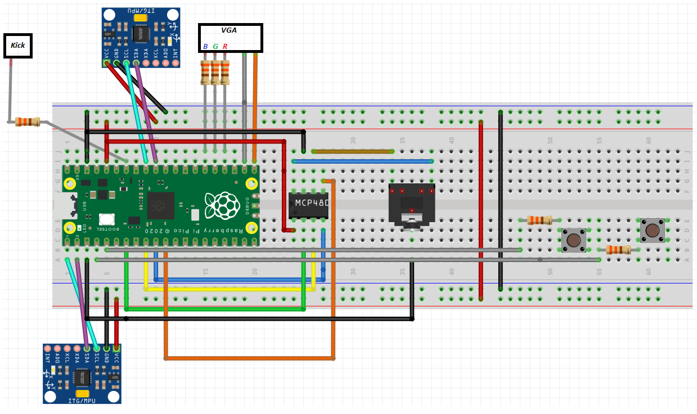
Figure 4: Hardware setup
IMU SETUP:
- GPIO 0 ---> MPU6050 SDA i2c0
- GPIO 1 ---> MPU6050 SCL i2c0
- GPIO 26 ---> MPU6050 SDA i2c1
- GPIO 27 ---> MPU6050 SCL i2c1
- 3.3V ---> MPU6050 VCC
- RP2040 GND ---> MPU6050 GND
PUSH BUTTONS:
- GPIO 2 ---> 330 ohms ---> BUTTON 0 ---> 3.3V
- GPIO 3 ---> 330 ohms ---> BUTTON 1 ---> 3.3V
DAC CONNECTIONS:
- GPIO 5 ---> CS
- GPIO 6 ---> CLK
- GPIO 7 ---> Transmit
- GPIO 8 ---> Receive
VGA CONNECTIONS:
- GPIO 16 ---> VGA Hsync
- GPIO 17 ---> VGA Vsync
- GPIO 18 ---> 330 ohm resistor ---> VGA Red
- GPIO 19 ---> 330 ohm resistor ---> VGA Green
- GPIO 20 ---> 330 ohm resistor ---> VGA Blue
- RP2040 GND ---> VGA GND
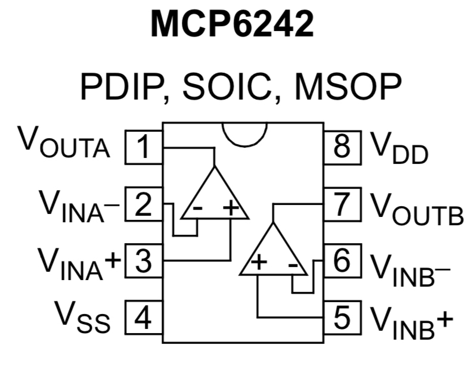
Figure 5: OP-AMP IC Chip utilized to create comparator circuit
KICK PEDAL & COMPARATOR:
- GPIO 28 ---> 330 ohms ---> MCP6242 VOUTA
- PEDAL ---> MCP6242 VINA+
- 0.5V ---> MCP6242 VINA-
- 3.3V ---> MCP6242 VDD
- RP2040 GND ---> MCP6242 VSS
1. Audio Synthesis and Output
a. Software
Our sound synthesis method is based on the principles of the Karplus-Strong algorithm, but with changes and modifications in implementation. The most significant difference is that, instead of computing the sound in real-time, we chose to complete the synthesis in the main code at the program's startup and store the sound waveforms in memory, which is then accessed by an interrupt service routine. To achieve this, in addition to the original Karplus-Strong algorithm (refer to equation (i) and Figure X), each time a value is computed, besides updating the value at the end of the buffer, it is also simultaneously stored in the synthesized drum sound waveform array. In this way, we ensured the consistency of the drum set sounds, and we have achieved realistic sound effects through parameter adjustments.
Apart from the necessary initializations and variable declarations, the code for the audio synthesis and output part is primarily divided into the following modules: the Karplus-Strong algorithm function used to synthesize the drum sound waveforms, the main function on core 0 that calls this function, applies filtering to the outputs and stores the results in memory, and the interrupt service routine that accesses the waveform array corresponding to the intended sound for outputting the values to the DAC.
The Karplus-Strong algorithm function is a translation and modification of the python code from this website. Figure 6 illustrates the code structure of the audio synthesis and output section.
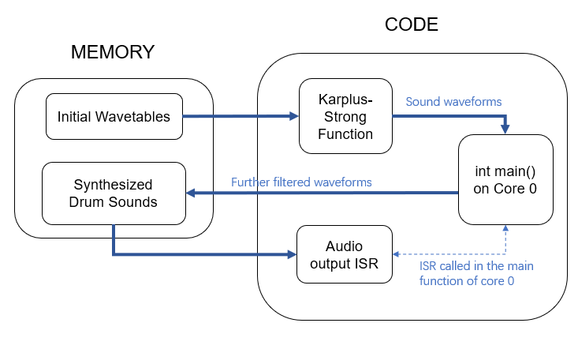
Figure 6: Block Diagram of Audio Synthesis and Output
Karplus-Strong Drum Synthesis Function:
For each drum sound, the initial wavetable is divided into two parts. The first part is filled with a constant value of 1, while the second part consists of values linearly decreasing from 1. The first part, outside the periodic range used for averaging, is attached only at the beginning of the sound and is not repeatedly cycled through afterward. We introduced this part to mimic real drum sound time-domain signals (refer to Figure X for an example), where a rapid, logarithmic-like amplitude decay is observed, with a brief plateau at the beginning of the sound. In the example of the sound synthesized using our method shown in Figure X, a close resemblance can be observed, and although the edges of the waveform still appear somewhat rigid, it is enough to trick the human ears.
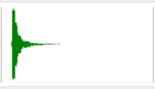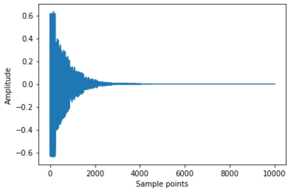
Figure 7: Time-domain signal of the snare drum hit level 5a sound effect (left)
Figure 8: A example of synthesized sound (before further filtering) (right)
In the function implementing the Karplus-Strong algorithm, during the averaging process, the first part of the initial wavetable is iterated through once, followed by cycling through and updating the second part until the drum sound waveform array is completely filled. The result of rand() % 2 is used for generating the random sign bit, resulting in a blend factor of ½. Recall from the background math section that theoretically, at this point, the value of p (i.e., how many indices back to look for averaging) no longer affects the pitch, but controls the decay time of the noise burst, creating different drum sounds.
However, when we tried this approach, the output sound was not ideal, and processing initial wavetables of different lengths for distinct drum sounds was a bit cumbersome for our design. Therefore, we switched to a different implementation, where we kept the length of the wavetables the same, set the value of p to 1 and adjusted the decay time by directly modifying the values in the initial wavetable. We manually put linearly decayed values into the second part of the initial wavetable, setting the decay slope to 0.5 to ensure a smooth transition at the cycle boundaries. This approach resulted in a satisfying hi-hat sound.
For the snare drum and the bass drum, we further applied a moving average filter to the output result of the Karplus-Strong function for low-pass filtering. The decay slope of their initial wavetable was set to 0.3 since the noise decay of drum heads should be faster compared to cymbals. The distinction between the snare drum and bass drum is that the bass drum has a larger moving average filter window, indicating a more aggressive low-pass filtering, as the bass drum relies more on the low frequency components.
Audio Output Interrupt Service Routine:
The ISR is called in the main function of core 0 with a time interval of 25us (40kHz). In this ISR, the sound triggering flags for the two drumsticks' IMUs are individually checked. If it is detected that a sound should be played, the ISR accesses the corresponding synthesized drum sound waveform array based on the current drumstick's sound mode (hi-hat or snare), and the retrieved value is then turned into DAC output format before being passed to the DAC. The GPIO input from the kick pedal is also checked, and if the pedal is pressed, the same procedure is done to pass the bass sound to the DAC. Note that we assume the left-hand drumstick and bass drum will not be played simultaneously, so their outputs are sent to the same DAC channel.
b. Hardware
DAC configurations:
Both the A and B output voltages of the DAC were used to produce sound. Each drum stick would trigger sounds to be played through a unique DAC output. We experienced issues such as sound clipping and inconsistent sound output when attempting to send both generated sounds through a single DAC output channel. The left-drumstick and the kick-pedal would trigger separated sounds that shared a single output of the DAC. This was done, as explained in the trade-offs section above, to avoid needing a new DAC IC chip and a new pair of speakers for the kick-drum. As the left stick and the kick drum do not often play at the same time, this was a worthy tradeoff.
Speakers:
When debugging and testing our kit, we utilized the typical speakers found at workstations across the lab. For our demonstration, we utilized the upgraded speakers that featured a small sub-woofer, dramatically increasing our drum-sound quality. The speaker size played an immense role in the sound of our “Air drum” kit, specifically due to the low pitch of our bass drum, which the typical lab speakers could not produce. When using the larger speakers, we were able to hear very convincing synthesized drum sounds emitted from the “Air Drum” kit.
c. Challenges and Explorations (Unsuccessful Attempts)
Additive synthesis:
The Karplus-Strong algorithm was able to produce convincing hi-hat and snare drum sounds, but had difficulty producing convincing kick-drum sounds. In order to synthesize the kick-drum, we attempted to utilize additive DDS. However, high resolution spectrogram images of kick-drum sounds were difficult to find. Instead, we attempted to utilize the modes of the vibrations of a 2D circular membrane. An image demonstrating these modes is shown below:
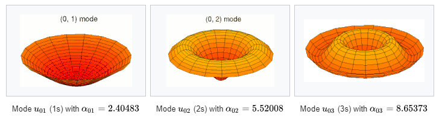
Figure 9: Vibration of a 1D circular membrane modes
The frequency of vibrations for each mode was determined by dividing the mode and the alpha values shown above. The signals were produced via DDS for each mode, and the signals were combined. We experimented with also adding variable delays to each mode. Despite this, the sounds that were produced were often very raspy and not similar to the kick-drum sounds that we were striving for. Instead, the sounds produced sounded similar to some tune drums, such as a bongo of tom-tom drums.
DMA usage:
We attempted to use DMA channels to transmit sounds instead of ISRs. We imagined that we could dedicate both cores completely to stick measurement, and transmit sounds when we needed to using the DMA channels, without any processor involvement. However, when attempting to use the DMA channels to play our sounds stored in memory, they would come out much shorter and be played far faster than we intended. We tried to modify this using the timer options available for use during DMA configuration but were never able to produce a sound as well as the audio producing ISR we were using. In the end, we decided to utilize ISRs to play these sounds, as stick sensing does not need to occur extremely fast (since it is human input) and we can spend time between drum strokes to produce the sounds.
Sound superposition:
For situations where both drumsticks and/or the bass drum are played simultaneously, initially, our intention was to sum the corresponding sample values, divide by the number of overlapping sounds to avoid overflowing, and then format the resulting value before sending it to a single channel of the DAC. However, going with this method did not work well. Sometimes it failed to trigger two overlapping sounds, sometimes there were issues with clipping and noise, and we couldn't pinpoint the source of the bug. So we made a compromise, as mentioned in the hardware - DAC section, and decided to not sum the sample values and to directly use both channels of the DAC. The downside is that the left-hand drumstick and the bass drum need to share one DAC channel and thus cannot produce sound simultaneously as intended.
2. Drum Interface
The essential elements of the drum interface were the drum-sticks and kick pedal. Drum stick movement was monitored using two IMU sensors. The kick-drum pedal output was sent to an OP-AMP comparator circuit, that would output a high signal if the output voltage from the pedal was greater than 0.5 V. By doing this, the oscillating, decaying output of the drum pedal could be converted to a digital signal easily detectable by a GPIO pin by the RP2040. Finally, push buttons were utilized to toggle between the hi-hat and snare drum sounds for each stick.
Both IMU sensors are I2C devices and share the same address (0x68). We utilized two separated I2C channels on the RP2040 (I2C0, I2C1) so that both sensors could be used at once. The sensors were oriented such that the Z-axis pointed downward, and the y-axis was parallel to the stick, pointing towards the stick tip.
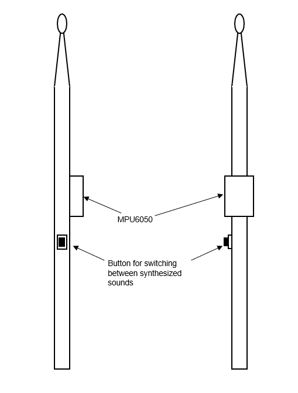
Figure 10: IMU and toggle-button position on stick
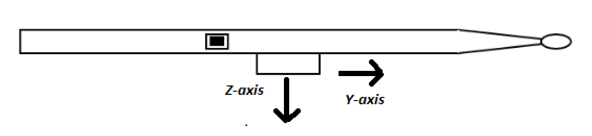
Figure 11: Stick orientation when in use
The above demonstrates the orientation each drum stick should be held in during operation.
a. Hardware/Software
Drumsticks:
As shown in the above figure, the IMU’s should be pointed downward for correct stick operation. Stick movement was tracked using the gyroscope values measured by the IMU. When the stick was moving downward, the gyroscope value would become negative. When moving upward, the gyroscope value was positive. Using the gyroscope value, we could determine whether the stick was in an upward stroke or downward stroke. Depending on the magnitude of the gyroscope value, we could determine whether a downward stroke is intentional or not. In order to do this, we simply set a negative threshold value for a sound to be played based on the measured gyroscope value. Once the gyroscope value surpassed this threshold, we would know that a sound should be played. In our case, this threshold was -10 units, which we determined by continuously moving the stick, and finding out which threshold value produced the most accurately timed drum sound in relation to drumstick movement.
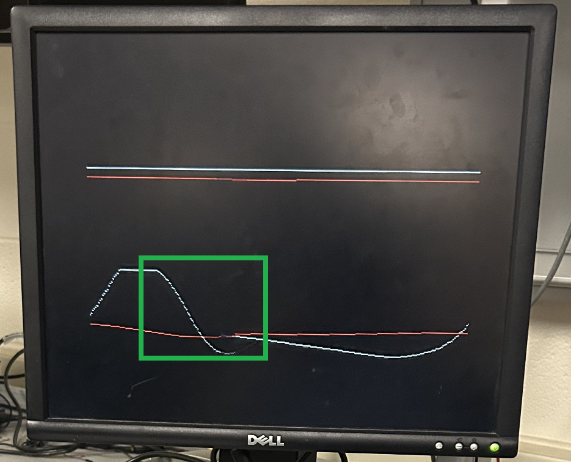
Figure 12: Downward gyroscope motion shown in green rectangle
Push-Buttons and Kick Pedal:
As stated previously, due to the OP-AMP comparator circuit, pressing the kick-pedal essentially operated as a push button.
When the kick-pedal was pressed, a 3.3 volt pulse was sent to GPIO 28 of the Pico. The GPIO 28 was set up as an active-high input, with a 330 ohm input resistance and an internal pull-down resistor. When the GPIO pin sensed a high input signal, the RP2040 would know that a kick-drum sound must be played.
When the kick-pedal was pressed, a 3.3 volt pulse was sent to GPIO 28 of the Pico. The GPIO 28 was set up as an active-high input, with a 330 ohm input resistance and an internal pull-down resistor. When the GPIO pin sensed a high input signal, the RP2040 would know that a kick-drum sound must be played.
An image of the waveform output from the kick-pedal and the signal generated by the comparator circuit that is sent to GPIO 28 is shown below:
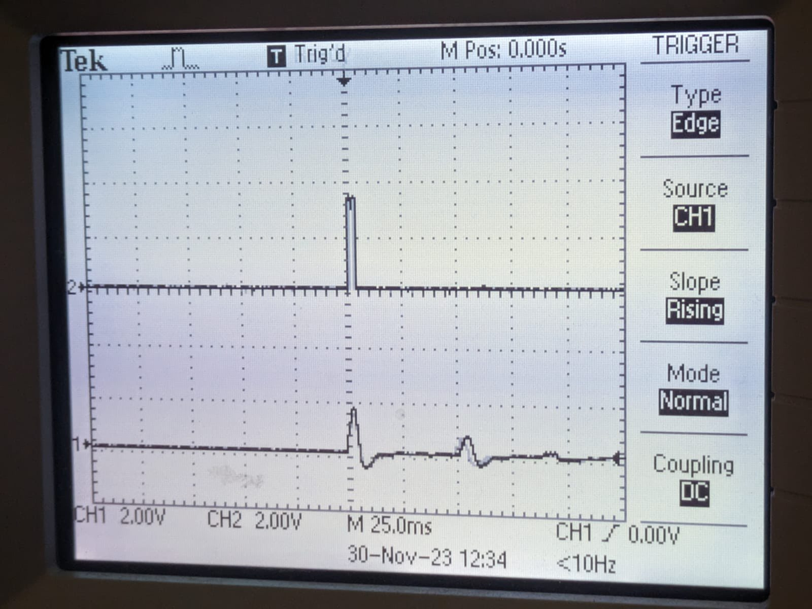
Figure 13: Kick drum output waveform and comparator output
The GPIO pins that the toggle-sound push-buttons were connected to were also active high input pins with 330 Ohm inputs and an internal pulldown resistor. When high, a hi-hat sound would be played, when low, a snare drum sound would be played. Note that since the snare drum and hi-hat sounds were played using stick movement the push-buttons determined the type of sound that would be played, however, the actual sound would only be played upon a downward stroke of a drumstick.
b. Challenges and Explorations (Unsuccessful Attempts)
Complementary angle data for sound triggering:
At first, we attempted to use the angle the stick made with the horizontal plane to determine if a sound should be played. While this would allow for drum sounds to be played on downward strokes, it is not very accommodating for different drum sounds. Such a method would require the user to move the stick to the same angle anytime a sound is desired to be played. This is not practical and is limited to any drum style. Furthermore, this becomes even more difficult when drumming in the air, and having no surface to reference. We found that using the gyroscope values measured by each IMU provided a better and more natural feeling drum playing experience.
I2C address/channel issues of the sensor:
When attempting to use a different address for each IMU sensor on the same I2C channel, we found that IMU measurements became inaccurate and simply did not work. We are not exactly sure why this issue occurred, however, we believe it was due to the poorly soldered A0 pin on one of the IMUs we were using. This could make the state of the address for this IMU move between 0x68 and 0x69, which would definitely cause the issues we were seeing. Instead, since we did not have any other I2C consuming devices, we decided to use completely separate I2C channels for each stick.
3. Visual Effects
a. Software
The visualizations produced for stick movement showed the complementary angles and the measured gyroscope values captured by each IMU for each stick. The values were initially plotted two separated axes, allowing us to debug the IMU measurements we were receiving. We removed the axis and left the plots, allowing us to not only have visual feedback of how the sticks were performing, but also providing a cool visual effect. THe kick drum would generate a circle in the center of the screen when played. This was easy to do, as the kick-drum would simply make a global variable high when played, and low on all other times.
All VGA screen drawings were performed in a thread. This thread featured a sleep time of 100 usec.
b. Hardware
The visual effects we produced for drum sound were shown on a VGA screen using the VGA functions and commands provided to us during class. The VGA screen was a key aspect of debugging and allowed us to view the angles and measurements of IMUs. We eventually decided that these measurements also made excellent visualizers for our drum kit.
Results
1. Drum Sounds
We have successfully replicated the sounds of a real drum set, at least convincing enough to deceive the human ears. (Hearing us playing before seeing it, people thought they were hearing REAL drum sounds!) Below are the time-domain waveforms of our synthesized drum sounds along with the corresponding audios.
a. Hi-hat (click for sound)

Figure 14: Hi-hat waveform
b. Snare (click for sound)

Figure 15: Snare drum waveform
c. Bass (click for sound)

Figure 16: Kick drum waveform
The waveforms shown in Figures 14-16 are the output waveforms generated by our Karplus Strong Algorithm implementation, that is sent to the DAC and played through the speakers. The sound of these waveforms are also located below them. Notice that all waveforms feature a decaying signal. Also note that as the waveforms progress from hi-hat to bass drum, and therefore from a higher pitched sound to a lower pitched sound, the peak-to-peak frequency of oscillation begins to decrease. In other words, the oscillation of the kick-drum waveform is slower than that of the hi-hat. This makes sense, as kick and snare drums are lower pitched instruments.
These output waveforms are very similar to hi-hat and drum sounds we have found online. In fact, throughout the sound development process, we constantly referenced real-drum images to make our signal sound as close to the real instruments as possible. When observing real-drum/hi-hat waveforms, you will also find that the frequency of oscillation for these signals decreases as the pitch of the drum is lowered, and a decay from the beginning to the end of the signal exists.
We are very satisfied with the quality of the sounds being produced, and believe that the synthesized hi-hat, snare and kick drum sounds are accurate and comparable to their real life counterparts.
2. Drum Interface
As mentioned in the visual effects section, we have dynamic visual effects displayed on the VGA screen synchronized with drum beats. As shown in Figure 17, the two red lines represent the complementary angles of the two drumsticks, and the white lines represent the gyro values in the x-axis direction, which move in response to the swinging of the drumsticks. The circle in the center of the screen appears when the bass drum is pressed down.
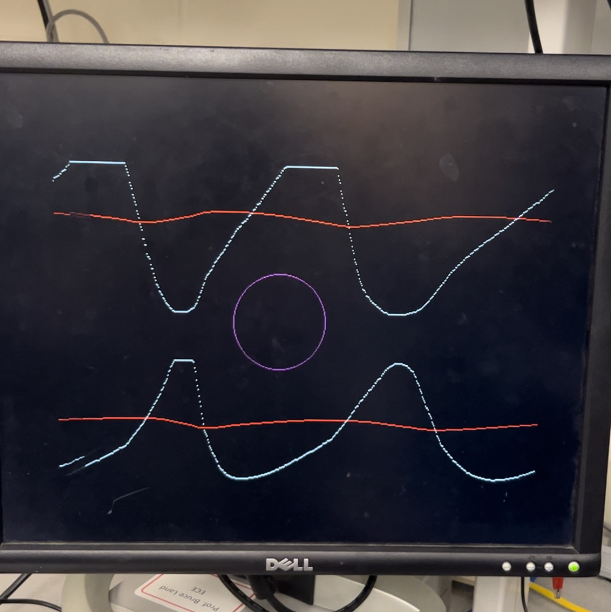
Figure 17: VGA screen visualization screen during “Air Drum” operation
The drum interface latency is so minimal that it can even be considered non-existent for human perception, and the user's playing experience is smooth. It feels as if playing a real drum set, as the sound usually comes out when the drumstick is swung down rapidly and approaches a horizontal position, except there is no sense of feedback from the drumstick striking an actual surface.
The latency of the VGA screen is also within an acceptable range. The real-time display of drumstick data is delayed by no more than half a second, ensuring there is no perceptible disconnect between the user's visual observation and sensation.
The sound triggering mechanism also works well. The sound is not triggered when the drumstick is swung slowly, and there is no issue of bouncing with multiple consecutive triggers during a single swing. It is worth noting that if there is an extremely rapid upward swing, there is a chance of triggering the sound. However, since such situations are not very common in actual performances, it does not affect the application of the drum set.
3. Usability
This air drum kit is compact, with a simple structured interface, serving as an easy entry point for drumming for anyone, and it allows for a smooth play experience as mentioned in the previous section. The drawbacks are that we have not synthesized all drum sound types, and the limitation that the left-hand drumstick cannot be played simultaneously with the bass drum, making the drum kit unable to play certain specific tracks.
Conclusions
1. Expectations & Thoughts
We believe our design performed well and met the goal of a realistic “Air Drum” machine we decided to develop when projects began. If allotted more time, we would definitely attempt to synthesize more sounds, such as cymbals and tom drums, creating a fuller drum kit. We would also experiment with different methods of switching between sounds for each stick, as having more buttons for all these sounds will be impractical. One method by which someone could do this is using position tracking of the stick. We believe this could be accomplished using an infrared sensor or even a camera.
Another attempt we will make is to calculate the intensity of drumstick swings using the gyro and acceleration data from the IMU sensors and adjust the volume of the output sound accordingly. This will make the drum kit more realistic and expressive, and would be a fun feature to add.
2. Intellectual Property
The Karplus Strong algorithm we utilized was based on code found on this webpage, that demonstrated the functionality of the algorithm to produce both string and hi-hat sounds within Python. We adapted the code to not only produce our own hi-hat sounds in C, but also snare and kick-drum sounds.
Appendix
1. Permission
The group approves this report for inclusion on the course website.
The group approves the video for inclusion on the course youtube channel.
2. Code
a. Air_Drums.c
* Air Drums - ECE5730 FALL23 Final Project
* By Ang Chen (ac2839), Devin Singh (ds2392), Kaiyuan Xu (kx74)
* VGA CONNECTIONS
* - GPIO 16 ---> VGA Hsync
* - GPIO 17 ---> VGA Vsync
* - GPIO 18 ---> 330 ohm resistor ---> VGA Red
* - GPIO 19 ---> 330 ohm resistor ---> VGA Green
* - GPIO 20 ---> 330 ohm resistor ---> VGA Blue
* - RP2040 GND ---> VGA GND
* IMU SETUP
* - GPIO 0 ---> MPU6050 SDA i2c0
* - GPIO 1 ---> MPU6050 SCL i2c0
* - GPIO 26 ---> MPU6050 SDA i2c1
* - GPIO 27 ---> MPU6050 SCL i2c1
* - 3.3v ---> MPU6050 VCC
* - RP2040 GND ---> MPU6050 GND
* PUSH BUTTONS
* - GPIO 2 --> 330 ohms --> BUTTON 0 --> 3.3V
* - GPIO 3 --> 330 ohms --> BUTTON 1 --> 3.3V
* - GPIO 4 --> 330 ohms --> KICK PEDAL --> 3.3V
* DAC CONNECTIONS
* - GPIO 5 ---> CS
* - GPIO 6 ---> CLK
* - GPIO 7 ---> Transmit
* - GPIO 8 ---> Receive
* KICK PEDAL & COMPARATOR
* - GPIO 28 ---> 330 ohms ---> MCP6242 VOUTA
* - PEDAL ---> MCP6242 VINA+
* - 0.5V ---> MCP6242 VINA-
* - 3.3V ---> MCP6242 VDD
* - RP2040 GND ---> MCP6242 VSS
*/
// Include necessary libraries
#include
#include
#include
#include
#include "pico/stdlib.h"
#include "pico/multicore.h"
#include "hardware/spi.h"
#include "hardware/sync.h"
#include "hardware/pio.h"
#include "hardware/i2c.h"
#include "hardware/adc.h"
// Include protothreads
#include "pt_cornell_rp2040_v1.h"
// Include custom libraries
#include "vga_graphics.h"
#include "mpu6050.h"
////////////////////////////////////////////////////////////////////////
//////////////////////////// IMU variables /////////////////////////////
// Arrays in which raw measurements will be stored
fix15 acceleration_0[3], gyro_0[3];
fix15 acceleration_1[3], gyro_1[3];
fix15 gyro_x_history_0[50];
fix15 gyro_difference_0;
fix15 gyro_x_history_1[50];
fix15 gyro_difference_1;
// Variables for computing the complementary angle for visual outputs
// For the IMU on the first drumstick (by default, the right-handed one)
volatile fix15 accel_angle_0;
volatile fix15 gyro_angle_delta_0;
volatile fix15 complementary_angle_0;
bool comp_angle_init_flag_0 = true;
bool filter_accle_flag_0 = true;
fix15 filtered_az_0;
fix15 filtered_ay_0;
// For the IMU on the second drumstick (by default, the left-handed one)
volatile fix15 accel_angle_1;
volatile fix15 gyro_angle_delta_1;
volatile fix15 complementary_angle_1;
bool comp_angle_init_flag_1 = true;
bool filter_accle_flag_1 = true;
fix15 filtered_az_1;
fix15 filtered_ay_1;
////////////////////////////////////////////////////////////////////////
////////////////// DAC parameters (see the datasheet) //////////////////
// A-channel, 1x, active
#define DAC_config_chan_A 0b0011000000000000
// B-channel, 1x, active
#define DAC_config_chan_B 0b1011000000000000
// Values output to DAC
int DAC_output_A ;
int DAC_output_B ;
// SPI data
uint16_t DAC_data_A ; // formatted output value
uint16_t DAC_data_B ; // formatted output value
// SPI configurations (note these represent GPIO number, NOT pin number)
#define PIN_MISO HIHAT
#define PIN_CS 5
#define PIN_SCK 6
#define PIN_MOSI 7
#define LDAC 8
#define SPI_PORT spi0
////////////////////////////////////////////////////////////////////////
///////////////////////// Drum Sound Synthesis /////////////////////////
// State machine variables
enum SOUND_MODE {
SILENCE,
HIHAT,
SNARE,
BASS
};
volatile unsigned int SOUND_MODE_1 = SILENCE; // current sound mode of the first drumstick
volatile unsigned int SOUND_MODE_2 = SILENCE; // current sound mode of the second drumstick
volatile unsigned int count_first_stick = 0;
volatile unsigned int count_second_stick = 0;
volatile unsigned int count_bass = 0;
// Karplus-Strong algorithm wavetables
const int n_samples = 5000;
const int len_wavetable_1 = 125;
const int len_wavetable_2 = 500;
int wavetable_1_hihat[125];
float wavetable_2_hihat[500];
int wavetable_1_snare[125];
float wavetable_2_snare[500];
int wavetable_1_bass[125];
float wavetable_2_bass[500];
// Synthesized drum sample arrays
float sound_hihat[5000];
float sound_snare[5000];
float sound_bass[5000];
// Push buttons
volatile unsigned int button_state_1 = SILENCE; // button on the first drumstick
volatile unsigned int button_state_2 = SILENCE; // button on the second drumstick
volatile unsigned int pedal_pressed = false;
volatile unsigned int pedal_pressed_previous;
volatile unsigned int pedal_played = false;
// Other GPIO mappings
#define BUTTON0_PIN 2
#define BUTTON1_PIN 3
#define PEDAL_PIN 28
#define LED_PIN 25
// Drum sound generation function
void karplus_strong_drum(int p, int* wavetable_1, int len_wavetable_1, float* wavetable_2, int len_wavetable_2, int n_samples, float* drum_sample) {
int current_sample = 0;
int previous_value = 0;
int sign;
// A copy of the second wavetable for saving the updated values
float wavetable_2_temp[500];
int wavetable_2_idx = 0;
for (int i=0; i 150 | fix2int15(gyro_0[0]) < 200) {
if (fix2int15(gyro_difference_0) < -10){ // To avoid consecutive triggers during a single swing
gpio_put(LED_PIN, 1);
SOUND_MODE_1 = button_state_1;
}
else {
gpio_put(LED_PIN, 0) ;
}
}
else {
gpio_put(LED_PIN, 0) ;
SOUND_MODE_1 = SILENCE;
}
// Complementary angle calculation
// Low-pass the raw accelerometer measurements before computing to get rid of white noise
if (filter_accle_flag_0 == true) {
filtered_az_0 = acceleration_0[2];
filtered_ay_0 = acceleration_0[1];
filter_accle_flag_0 = false;
}
filtered_az_0 = filtered_az_0 + ((acceleration_0[2]-filtered_az_0)>>6);
filtered_ay_0 = filtered_ay_0 + ((acceleration_0[1]-filtered_ay_0)>>6);
// Not small angle approximation
accel_angle_0 = multfix15(float2fix15(atan2(fix2float15(filtered_az_0),fix2float15(filtered_ay_0)))+float2fix15(3.14159), oneeightyoverpi);
// Initialize complementrary angle with accel_angle
if (comp_angle_init_flag_0 == true){
complementary_angle_0 = int2fix15(0);
comp_angle_init_flag_0 = false;
}
// Gyro angle data
gyro_angle_delta_0 = multfix15(gyro_0[0], zeropt001);
// Complementary angle
complementary_angle_0 = multfix15(complementary_angle_0 - gyro_angle_delta_0, zeropt999) + multfix15(accel_angle_0, zeropt001);
return true;
}
// Interrupt service routine on core 1
// For monitoring the movement of the second drumstick
bool isr_imu_2 () {
// Determine the current sound mode based on the toggle button input
if (gpio_get(BUTTON1_PIN)) {
button_state_2 = HIHAT;
}
else {
button_state_2 = SNARE;
}
// Store the gyro history
for (int i=0; i<50; i++) {
if (i!=49) {
gyro_x_history_1[i+1] = gyro_x_history_1[i];
}
}
gyro_x_history_1[0] = gyro_1[0];
// Read the IMU
mpu6050_read_raw(acceleration_1, gyro_1, 1, ADDRESS_CORE_1); // NOTE! This is in 15.16 fixed point. Accel in g's, gyro in deg/s
// Compute the gyro difference by looking a few samples back
// to avoid the impact of the noise
gyro_difference_1 = gyro_1[0] - gyro_x_history_1[49];
// When a fast downstroke is detected, indicate which sound to be played according to the current sound mode
if (fix2int15(gyro_1[0]) > 150 | fix2int15(gyro_1[0]) < 200) {
if (fix2int15(gyro_difference_1) < -10){ // To avoid consecutive triggers during a single swing
gpio_put(LED_PIN, 1);
SOUND_MODE_2 = button_state_2;
}
else {
gpio_put(LED_PIN, 0);
}
}
else {
gpio_put(LED_PIN, 0);
SOUND_MODE_2 = SILENCE;
}
// Complementary angle calculation
// Low-pass the raw accelerometer measurements before computing to get rid of white noise
if (filter_accle_flag_1 == true) {
filtered_az_1 = acceleration_1[2];
filtered_ay_1 = acceleration_1[1];
filter_accle_flag_1 = false;
}
filtered_az_1 = filtered_az_1 + ((acceleration_1[2]-filtered_az_1)>>6);
filtered_ay_1 = filtered_ay_1 + ((acceleration_1[1]-filtered_ay_1)>>6);
// Not small angle approximation
accel_angle_1 = multfix15(float2fix15(atan2(fix2float15(filtered_az_1),fix2float15(filtered_ay_1)))+float2fix15(3.14159), oneeightyoverpi);
// Initialize complementrary angle with accel_angle
if (comp_angle_init_flag_1 == true){
complementary_angle_1 = int2fix15(0);
comp_angle_init_flag_1 = false;
}
// Gyro angle data
gyro_angle_delta_1 = multfix15(gyro_1[0], zeropt001);
// Complementary angle
complementary_angle_1 = multfix15(complementary_angle_1 - gyro_angle_delta_1, zeropt999) + multfix15(accel_angle_1, zeropt001);
return true;
}
// Thread that draws to VGA display
static PT_THREAD (protothread_vga(struct pt *pt))
{
// Indicate start of thread
PT_BEGIN(pt) ;
// We will start drawing at column 81
static int xcoord = 81 ;
// Rescale the measurements for display
static float OldRange = 500. ; // (+/- 250)
static float NewRange = 150. ; // (looks nice on VGA)
static float OldMin = -250. ;
static float OldCompRange = 180.;
static float OldCompMin = 0. ;
static float OldCompMax = 180. ;
while (true) {
// Erase a column
drawVLine(xcoord, 0, 480, BLACK) ;
// Draw top plot
drawPixel(xcoord, 230 - (int)(NewRange*((float)((fix2float15(complementary_angle_0))-OldCompMin)/OldCompRange)), RED);
drawPixel(xcoord, 230 - (int)(NewRange*((float)((fix2float15(gyro_0[0]))-OldMin)/OldRange)), WHITE);
// Draw bottom plot
drawPixel(xcoord, 430 - (int)(NewRange*((float)((fix2float15(complementary_angle_1))-OldCompMin)/OldCompRange)), RED);
drawPixel(xcoord, 430 - (int)(NewRange*((float)((fix2float15(gyro_1[0]))-OldMin)/OldRange)), WHITE);
// Draw the pedal circle
if (pedal_played) {
drawCircle(320, 240, 50, MAGENTA);
}
else {
drawCircle(320, 240, 50, BLACK);
}
// Update horizontal cursor
if (xcoord < 609) {
xcoord += 1 ;
}
else {
xcoord = 81 ;
}
PT_YIELD_usec(100);
}
// Indicate end of thread
PT_END(pt);
}
// This ISR is called on core 0
bool isr_audio_output(struct repeating_timer *t) {
// Save the historical state of the pedal
pedal_pressed_previous = pedal_pressed;
// Read the input from the kick pedal
if (gpio_get(PEDAL_PIN)) {
gpio_put(LED_PIN, 1);
// Toggle the button state when there is a steady press
pedal_pressed = true;
if (pedal_pressed_previous == true) {
pedal_played = true; // Set the flag to avoid consecutive triggers
}
}
// Check if the first drumstick is triggered
// If it is, scale the value to be sent to the DAC
if (SOUND_MODE_1 == HIHAT) {
DAC_output_A = (sound_hihat[count_first_stick] + 2) * 1024;
}
else if (SOUND_MODE_1 == SNARE) {
DAC_output_A = (sound_snare[count_first_stick] + 1) * 2048;
}
if (SOUND_MODE_1 != SILENCE) {
// Format the output value
DAC_data_A = (DAC_config_chan_A | (DAC_output_A & 0xffff));
// SPI write (no spinlock b/c of SPI buffer)
spi_write16_blocking(SPI_PORT, &DAC_data_A, 1);
DAC_output_A = 0;
count_first_stick += 1;
// Reset after a drum sound playback is completed
if (count_first_stick == n_samples) {
SOUND_MODE_1 = SILENCE;
count_first_stick = 0;
}
}
// Check if the second drumstick is triggered
// If it is, scale the value to be sent to the DAC
if (SOUND_MODE_2 == HIHAT) {
DAC_output_B = (sound_hihat[count_second_stick] + 2) * 1024;
}
else if (SOUND_MODE_2 == SNARE) {
DAC_output_B = (sound_snare[count_second_stick] + 1) * 2048;
}
if (SOUND_MODE_2 != SILENCE) {
// Format the output value
DAC_data_B = (DAC_config_chan_B | (DAC_output_B & 0xffff));
// SPI write (no spinlock b/c of SPI buffer)
spi_write16_blocking(SPI_PORT, &DAC_data_B, 1); // NOTE! This drumstick shares the DAC channel B with the kick drum
DAC_output_B = 0;
count_second_stick += 1;
// Reset after a drum sound playback is completed
if (count_second_stick == n_samples) {
SOUND_MODE_2 = SILENCE;
count_second_stick = 0;
}
}
// Check if the second drumstick is triggered
if (pedal_played == true) {
gpio_put(LED_PIN, 1);
// If it is, scale the value to be sent to the DAC
DAC_output_B = (sound_bass[count_bass]*4 + 1) * 2048;
// Format the output value
DAC_data_B = (DAC_config_chan_B | (DAC_output_B & 0xffff));
// SPI write (no spinlock b/c of SPI buffer)
spi_write16_blocking(SPI_PORT, &DAC_data_B, 1); // NOTE! The kick drum shares the DAC channel B with the second drumstick
count_bass += 1;
// Reset after a drum sound playback is cpmpleted
if (count_bass == n_samples) {
count_bass = 0;
pedal_played = false;
}
}
return true;
}
// Core 1 entry point
void core1_entry() {
// create an alarm pool on core 1
alarm_pool_t *core1pool ;
core1pool = alarm_pool_create(2, 16) ;
// Create repeating timers that calls the IMU interrupt service routines.
struct repeating_timer timer_core_1_IMU_1;
struct repeating_timer timer_core_1_IMU_2;
// Call isr_imu_1 and isr_imu_2 at a frequency of 1kHz
alarm_pool_add_repeating_timer_us(core1pool, -1000,
isr_imu_1, NULL, &timer_core_IMU_1);
alarm_pool_add_repeating_timer_us(core1pool, -1000,
isr_imu_2, NULL, &timer_core_1_IMU_2);
while (1) {
sleep_ms(1);
}
}
// Core 0 entry point
int main() {
////////////////////////////////////////////////////////////////////////
////////////////////// DRUM SOUND SYNTHESIS ////////////////////////////
// The first part of the wavetable
for (int i=0; i 49 && i < (n_samples - 50)) {
for (int j=-49; j<50; j++) {
if (j!=0)
sound_bass[i] += sound_snare[i+j];
}
}
else if (i >=0 && i < 49) {
for (int j=i; j<49; j++) {
sound_bass[i] += sound_snare[j];
}
sound_bass[i] += i+1;
}
sound_bass[i] = sound_bass[i]/20;
}
// Smoothing average for snare (moving average filter)
for (int i=0; i<(n_samples); i++) {
if (i > 2 && i < (n_samples - 3)) {
for (int j=-2; j<10; j++) {
if (j!=0)
sound_snare[i] += sound_snare[i+j];
}
sound_snare[i] = sound_snare[i]/5;
}
}
////////////////////////////////////////////////////////////////////////
///////////////////////// INITIALIZATION ///////////////////////////////
// Initialize stdio/uart
stdio_init_all();
printf("Hello, friends!\n");
// Initialize VGA
initVGA() ;
// Map LED to GPIO port, make it low
gpio_init(LED_PIN) ;
gpio_set_dir(LED_PIN, GPIO_OUT) ;
gpio_put(LED_PIN, 0) ;
// Push button input pins
gpio_init(BUTTON0_PIN);
gpio_set_dir(BUTTON0_PIN, GPIO_IN);
gpio_pull_down(BUTTON0_PIN);
gpio_init(BUTTON1_PIN);
gpio_set_dir(BUTTON1_PIN, GPIO_IN);
gpio_pull_down(BUTTON1_PIN);
gpio_init(PEDAL_PIN);
gpio_set_dir(PEDAL_PIN, GPIO_IN);
gpio_pull_down(PEDAL_PIN);
////////////////////////////////////////////////////////////////////////
///////////////////////// SPI CONFIGURATION ////////////////////////////
// Initialize SPI channel (channel, baud rate set to 20MHz)
spi_init(SPI_PORT, 20000000) ;
// Format (channel, data bits per transfer, polarity, phase, order)
spi_set_format(SPI_PORT, 16, 0, 0, 0);
// Map SPI signals to GPIO ports
gpio_set_function(PIN_MISO, GPIO_FUNC_SPI);
gpio_set_function(PIN_SCK, GPIO_FUNC_SPI);
gpio_set_function(PIN_MOSI, GPIO_FUNC_SPI);
gpio_set_function(PIN_CS, GPIO_FUNC_SPI) ;
////////////////////////////////////////////////////////////////////////
///////////////////////// I2C CONFIGURATION ////////////////////////////
i2c_init(I2C_CHAN_CORE_0, I2C_BAUD_RATE) ;
i2c_init(I2C_CHAN_CORE_1, I2C_BAUD_RATE) ;
gpio_set_function(SDA_PIN_CORE_0, GPIO_FUNC_I2C) ;
gpio_set_function(SCL_PIN_CORE_0, GPIO_FUNC_I2C) ;
gpio_set_function(SDA_PIN_CORE_1, GPIO_FUNC_I2C) ;
gpio_set_function(SCL_PIN_CORE_1, GPIO_FUNC_I2C) ;
// MPU6050 initialization
mpu6050_reset(0, ADDRESS_CORE_0);
mpu6050_read_raw(acceleration_0, gyro_0, 0, ADDRESS_CORE_0);
mpu6050_reset(1, ADDRESS_CORE_1);
mpu6050_read_raw(acceleration_0, gyro_0, 1, ADDRESS_CORE_1);
// Map LDAC pin to GPIO port, hold it low (could alternatively tie to GND)
gpio_init(LDAC) ;
gpio_set_dir(LDAC, GPIO_OUT) ;
gpio_put(LDAC, 0) ;
////////////////////////////////////////////////////////////////////////
//////////////////// CORE & ISR & THREAD MANAGEMENT ////////////////////
// Launch core 1
multicore_launch_core1(core1_entry);
// Create a repeating timer that calls repeating_timer_callback (defaults core 0)
struct repeating_timer timer_core_0;
// Negative delay so means we will call repeating_timer_callback, and call it
// again 25us (40kHz) later regardless of how long the callback took to execute
add_repeating_timer_us(-25,
isr_audio_output, NULL, &timer_core_0);
// Add core 0 thread
pt_add_thread(protothread_vga);
// Start scheduling core 0 thread
pt_schedule_start;
}
b. MPU6050.h
/* From Professor Hunter Adams (vha3@cornell.edu)
* Modified for the Air Drums Project
*/
#define ADDRESS_CORE_0 0x68
#define ADDRESS_CORE_1 0x68
#define I2C_CHAN_CORE_0 i2c0
#define I2C_CHAN_CORE_1 i2c1
#define SDA_PIN_CORE_0 0
#define SCL_PIN_CORE_0 1
#define SDA_PIN_CORE_1 26
#define SCL_PIN_CORE_1 27
#define I2C_BAUD_RATE 400000
// Fixed point data type
typedef signed int fix15 ;
#define multfix15(a,b) ((fix15)(((( signed long long)(a))*(( signed long long)(b)))>>16))
#define float2fix15(a) ((fix15)((a)*65536.0f)) // 2^16
#define fix2float15(a) ((float)(a)/65536.0f)
#define int2fix15(a) ((a)<<16)
#define fix2int15(a) ((a)>>16)
#define divfix(a,b) ((fix15)(((( signed long long)(a) << 16 / (b)))))
// Parameter values
#define oneeightyoverpi 3754936
#define zeropt001 65
#define zeropt999 65470
#define zeropt01 655
#define zeropt99 64880
#define zeropt1 6553
#define zeropt9 58982
// VGA primitives - usable in main
void mpu6050_reset(int chan, int address) ;
void mpu6050_read_raw(fix15 accel[3], fix15 gyro[3], int chan, int address) ;
c. MPU6050.c
/* From Professor Hunter Adams (vha3@cornell.edu)
* Modified for the Air Drums Project
*/
#include "hardware/i2c.h"
#include "mpu6050.h"
void mpu6050_reset(int chan, int address) {
// Two byte reset. First byte register, second byte data
// There are a load more options to set up the device in
// different ways that could be added here
if (chan==0) {
uint8_t buf[] = {0x6B, 0x00};
i2c_write_blocking(I2C_CHAN_CORE_0, address, buf, 2, false);
// Set gyro sample rate (set to 1KHz, same as accel)
uint8_t gyro_rate[] = {0x19, 0b00000111} ;
i2c_write_blocking(I2C_CHAN_CORE_0, address, gyro_rate, 2, false);
// Configure the Gyro range (+/- 250 deg/s)
uint8_t gyro_settings[] = {0x1b, 0b00000000} ;
i2c_write_blocking(I2C_CHAN_CORE_0, address, gyro_settings, 2, false);
// Configure the Accel range (+/- 2g's)
uint8_t accel_settings[] = {0x1c, 0b00000000} ;
i2c_write_blocking(I2C_CHAN_CORE_0, address, accel_settings, 2, false);
// Configure interrupt pin
uint8_t pin_settings[] = {0x37, 0b00010000} ;
i2c_write_blocking(I2C_CHAN_CORE_0, address, pin_settings, 2, false);
// Configure data ready interrupt
uint8_t int_config[] = {0x38, 0x01} ;
i2c_write_blocking(I2C_CHAN_CORE_0, address, int_config, 2, false);
}
else if (chan==1) {
uint8_t buf[] = {0x6B, 0x00};
i2c_write_blocking(I2C_CHAN_CORE_1, address, buf, 2, false);
// Set gyro sample rate (set to 1KHz, same as accel)
uint8_t gyro_rate[] = {0x19, 0b00000111} ;
i2c_write_blocking(I2C_CHAN_CORE_1, address, gyro_rate, 2, false);
// Configure the Gyro range (+/- 250 deg/s)
uint8_t gyro_settings[] = {0x1b, 0b00000000} ;
i2c_write_blocking(I2C_CHAN_CORE_1, address, gyro_settings, 2, false);
// Configure the Accel range (+/- 2g's)
uint8_t accel_settings[] = {0x1c, 0b00000000} ;
i2c_write_blocking(I2C_CHAN_CORE_1, address, accel_settings, 2, false);
// Configure interrupt pin
uint8_t pin_settings[] = {0x37, 0b00010000} ;
i2c_write_blocking(I2C_CHAN_CORE_1, address, pin_settings, 2, false);
// Configure data ready interrupt
uint8_t int_config[] = {0x38, 0x01} ;
i2c_write_blocking(I2C_CHAN_CORE_1, address, int_config, 2, false);
}
}
void mpu6050_read_raw(fix15 accel[3], fix15 gyro[3], int chan, int address) {
// For this particular device, we send the device the register we want to read
// first, then subsequently read from the device. The register is auto incrementing
// so we don't need to keep sending the register we want, just the first.
uint8_t buffer[6];
int16_t temp_accel, temp_gyro ;
// Start reading acceleration registers from register 0x3B for 6 bytes
uint8_t val = 0x3B;
if (chan==0) {
i2c_write_blocking(I2C_CHAN_CORE_0, address, &val, 1, true); // true to keep master control of bus
i2c_read_blocking(I2C_CHAN_CORE_0, address, buffer, 6, false);
}
else if (chan==1) {
i2c_write_blocking(I2C_CHAN_CORE_1, address, &val, 1, true); // true to keep master control of bus
i2c_read_blocking(I2C_CHAN_CORE_1, address, buffer, 6, false);
}
for (int i = 0; i < 3; i++) {
temp_accel = (buffer[i<<1] << 8 | buffer[(i<<1) + 1]);
accel[i] = temp_accel ;
accel[i] <<= 2 ; // convert to g's (fixed point)
}
// Now gyro data from reg 0x43 for 6 bytes
// The register is auto incrementing on each read
val = 0x43;
if (chan==0) {
i2c_write_blocking(I2C_CHAN_CORE_0, address, &val, 1, true);
i2c_read_blocking(I2C_CHAN_CORE_0, address, buffer, 6, false); // False - finished with bus
}
else if (chan==1) {
i2c_write_blocking(I2C_CHAN_CORE_1, address, &val, 1, true);
i2c_read_blocking(I2C_CHAN_CORE_1, address, buffer, 6, false); // False - finished with bus
}
for (int i = 0; i < 3; i++) {
temp_gyro = (buffer[i<<1] << 8 | buffer[(i<<1) + 1]);
gyro[i] = temp_gyro ;
gyro[i] = multfix15(gyro[i], 500<<16) ; // deg/sec
}
}
3. Work Contribution
Kaiyuan and Devin worked on the code for drum sound synthesis, stick motion sensing and VGA screen visualization. They also wrote the report. Ang worked on soldering hardware components and developing the website.
4. References
Comparator - MCP6242 Datasheet
Lab contents of ECE5730 fall 2023
Previous Air Drums Project Utilizing IR Sensors